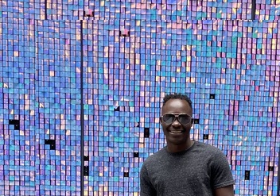

Site Name
The site name is going to be Temple in and suites, temple in an suites will provides services to people a round and all a round the country it is a gosple based suite and will have amazing features, stuff to provide greate services to our client.
Site Purpose
The main purpose of Temple in and Suites is to provide people with a great enviroment that meets their needs, accomadation will be mavalous due to its features, to ensure our client have the best experience they will everget.
Target Audience
The target audience of Templeinandsuites.com is described below.
Families
Temple in and suites is family friendy and everyone is welcome to view the amazing features on the website, the same feaures you will come across on the site you will experience all of it when you pay a vist at Temple in and suites.
Ages
Temple in and Suites is user friendly to all viewers it will be designed in a way that the content will available to most age group starting form 5 and older
Ongom Raymond

- Ocupation:Temple in and Suites Area Management
- Demographic and Education: 30 years old, works for temple in and suites Company. He has a degree in Business.
- Social. likes soccer and traveling, Originally from Africa, travels back to africa with his family every year and he has a beatiful family.
Ojok Joseph
- Occupation:Chief Exective Officer(CEO).
- Demographic and Education: 42 years old, He owns several resturants around the country! He graduated with bachelors in Business Management.
- Social. He likes going out for adventures, spending time with his family and go hiking.
Scenarios
- What is the importance of this site?
- What are the outcomes of the site?
- What design principle used in building this site?
Scenario 1: What is the importance of this site?
- To provide necessarry informatiom to the users in the technology world
- Simplification of complex content into a more user friendly Community.
Scenario 2: What are the outcomes of the site.
- Making sure the users understand the content.
- Giving users the best experience by making the site by following the best disign princples of development.
Scenario 3: What design principles used in building this site.
- Design principles used are Color and Typography.
Typography
Domain Name: Templeinandsuites.com
My Typography will mainly affect the following
- Header font-family: ['IBM Plex Serif', serif;]
- Headings font-family: ['IBM Plex Serif', serif;]
- Main font-family: ['EB Garamond', serif; ]
- Maragraph font-family: ['EB Garamond', serif; ]
- Footer font-family: ['EB Garamond', serif; ]
Color Scheme
Site Map

Small view

Medium View
Large view